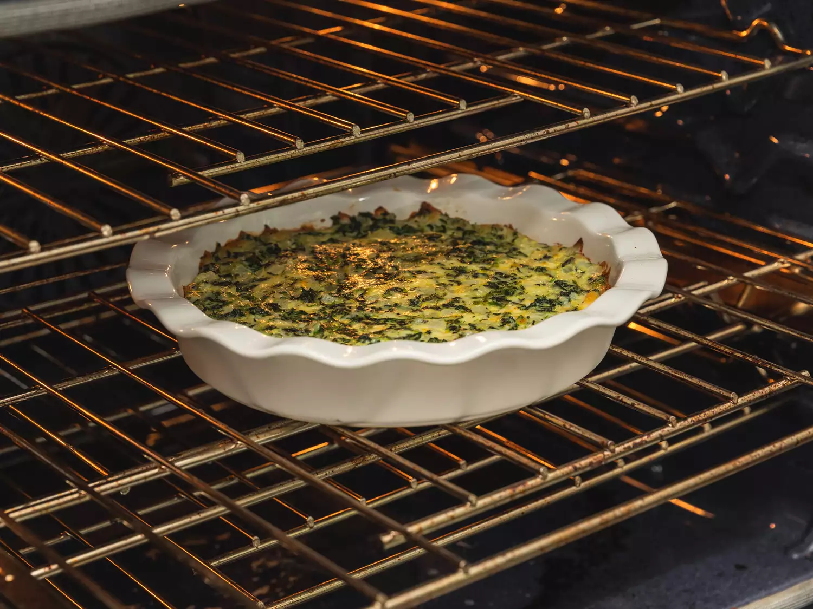
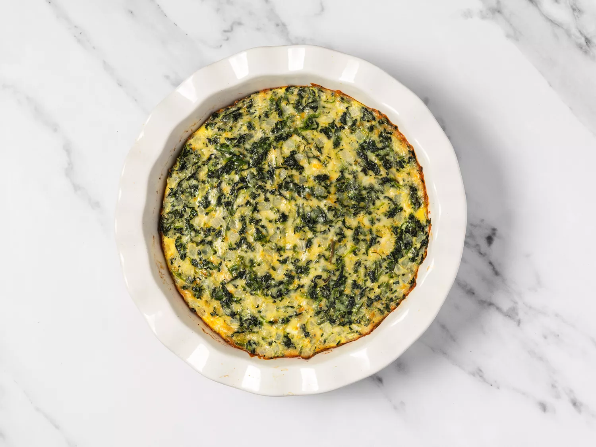

Crustless Spinach Quiche
This crustless quiche with spinach and Muenster cheese is perfect to serve at any meal. With no crust to bake, this light-tasting quiche is ready to serve in under an hour.

Description
When you're in need of a crustless quiche that will brighten up your breakfast or brunch, turn to this tried-and-true recipe. It's easy to make, takes less than an hour, and it's a crowd favorite. This cheesy, savory quiche makes the perfect addition to any brunch menu.
Ingredients
- 1 tablespoon vegetable oil
- 1 medium onion, chopped
- 1 (10 ounce) package frozen chopped spinach - thawed, drained, and squeezed dry
- 5 large eggs, beaten
- ¼ teaspoon salt
- ⅛ teaspoon ground black pepper
- 3 cups shredded Muenster cheese
Directions steps
- Step 1
Gather the ingredients. Preheat oven to 350 degrees F (175 degrees C). Lightly grease a 9-inch pie pan.

- Step 2
Heat oil in a large skillet over medium-high heat. Add onions and cook, stirring occasionally, until soft, about 3 minutes. Stir in spinach and continue to cook until excess moisture has evaporated.

- Step 3
Whisk together eggs, salt, and pepper in a large bowl. Add Muenster cheese and spinach mixture and stir until well blended.

- Step 4
Pour into the prepared pan.

- Step 5
Bake in the preheated oven until eggs have set, about 30 minutes.

- Step 6
Remove from the oven and let cool for 10 minutes before serving.

- Step 7
Serve hot and enjoy!

Cook’s Note
You can customize this crustless quiche by adding leftover ham and substituting shredded Cheddar, crumbled feta, or goat cheese for the Muenster.
Home